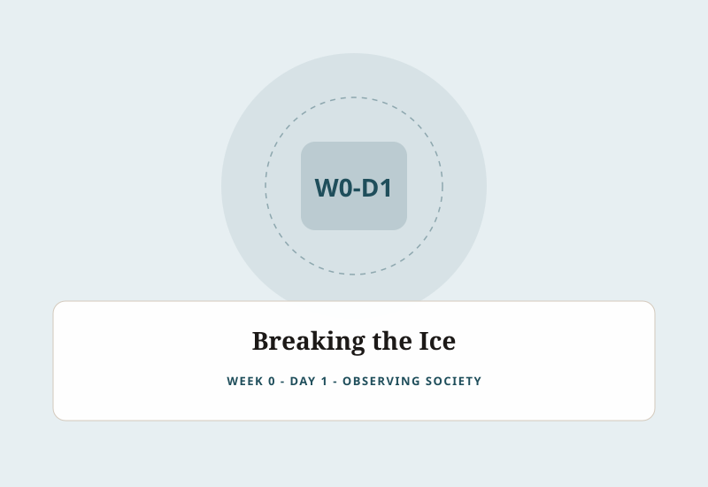

WEEK 0 • DAY 1
Breaking the Ice
FIELD LOG 01
WHAT HAPPENED
- Engaged in immersive ice-breaking activities to break initial hesitation.
- Stepped out of comfort zones and connected with peers from diverse multidisciplinary backgrounds.
- Engaged in open team dialogues to identify everyday challenges and problems faced by society.
Day Reflection:
The day gradually moved us from simply getting acquainted with one another to becoming more observant about the world around us and the systemic problems within it.
Visual Diary • Day 1

DAY 01 / PROTOSEM — “Breaking the ice: From strangers to collaborators”